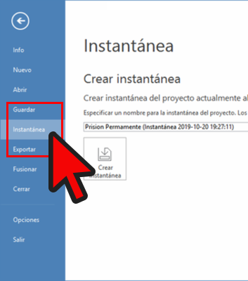

Análisis con Atlas.ti 8
Juan Muñoz
Universitat Autònoma de Barcelona
juan.munoz@uab.cat
http:/juan.psicologiasocial.eu


Fases del análisis (Atlas.ti)

Añadir documentos


Descargar y descomprimir https://bit.ly/2tboqvO
- Inicio > Agregar documentos > Agregar archivos
- Gestor de documentos > Crear comentarios de documentos
Crear memos-anotaciones

- Crear un memo “Proceso”
- Describir los pasos dados hasta el momento
- Crear un memo “Objetivos”, p. ej.:
- “Objetivo general: Caracterización del discurso de la prensa española sobre la PPR”
- “Objetivos específicos: ….”
Estrategias de codificación

Ejercicio: Segmentación y codificación

- Crear citas “libres” en varios documentos.
- Eliminar citas.
- Modificar tamaño de citas.
- Codificar con las opciones “Codificación abierta” y “Codificación por lista”.
- Añadir comentarios de códigos.
- Explorar citas y códigos con los respectivos administradores y navegadores.
Ejercicio: Guardar


Comparación constante


Friese (2011)
Agrupar

Analizar
¿Qué “actores” aparecen en las secciones utilizadas para captar la atención (títulos…)?

Co-ocurrencias

Co-ocurrencias

Co-ocurrencias

Estructura: Grupos de códigos

Estructura: Relaciones entre códigos…

Redes temáticas

Redes